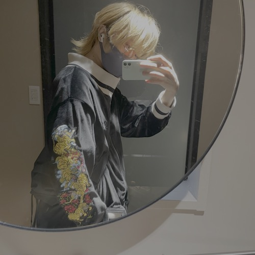

個人開発
Masaya Inaba
iOSエンジニア / 個人開発者。作ったアプリを紹介しています。
※このサイトのアプリや記事は、AIと一緒に作っています。言い回しや漢字が少し変なところがあるかもしれません。
作っているアプリ
現在公開・開発中のアプリです。
About me
ふたりの猫、「きなり」と「すけろく」と気ままに暮らす毎日。 ブリーダーさん曰く双子――でも、性格もルックスも全然違うのはきっと"うちだけの特別"。そんなギャップすら愛おしい存在です。
日々、iOSアプリの世界でアイデアとコードを行き来するリモートエンジニア。作ること、試すこと、考えることが好きで、休日もつい個人開発に手が伸びます。 新しいアプリの種になりそうなアイデアがないか、日常のふとした瞬間にもつい探してしまうのが癖です。
Swift
Objective-C
SwiftUI
SwiftData
UIKit
RxSwift
TCA
CloudKit
Supabase
PostgreSQL
Push Notifications (APNs)
AVFoundation
WidgetKit
App Store Connect / 審査対応
Figma
n8n
XcodeGen
Swift Concurrency
Google Mobile Ads
AppIntents
Bitrise
TestRail
Liquid Glass対応
CoreLocation
MapKit
BLE
Firebase
XCTest
Combine
Notion
Slack
APNs
CocoaPods/Carthage
Alamofire
Face ID / Keychain
Deep Linking
ローカリゼーション
GitHub Actions